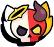
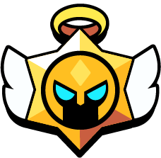

Novedades noviembre 2024
Las novedades en Brawl Stars suelen incluir una combinación de mejoras, ajustes y contenido nuevo para mantener el juego fresco y equilibrado. Generalmente, se lanzan arreglos de bugs para solucionar problemas técnicos o de jugabilidad, optimizando la experiencia del jugador. Además, se introducen actualizaciones de balance para ajustar las estadísticas de los brawlers, garantizando un juego competitivo justo.
También es común la llegada de nuevo contenido, como modos de juego, mapas, eventos especiales, o características que enriquecen la jugabilidad. Los desarrolladores suelen añadir skins y personalizaciones, junto con recompensas exclusivas para fomentar la progresión. En ocasiones, se implementan mejoras en la interfaz y funciones sociales, como cambios en los clubes o el sistema de trofeos. Finalmente, se incluyen detalles sobre el próximo contenido y ajustes generales que responden al feedback de la comunidad.
¿Que nos trajo Brawl Stars?
Evento nuevo! Angeles y demonios
Ángeles vs. Demonios es un evento que tuvo lugar durante la Temporada 32 del Brawl Pass: Ángeles vs. Demonios. El evento presentó un nuevo sistema de competencias, dos nuevos eventos de trofeos, nuevas habilidades para los brawlers y elementos de recompensa novedosos.
Cada día, al abrir el juego, se lanzará la "Moneda del Destino", y el jugador será asignado como un Ángel o un Demonio durante 24 horas. Sin embargo, los fines de semana el jugador recibirá un "Libre Albedrío" para elegir voluntariamente de qué lado estar. Dependiendo del lado elegido, varios elementos del juego cambian. El jugador tendrá un fondo y música especial en el lobby según su alineación. Solo se pueden equipar habilidades angélicas si el jugador es un Ángel, y únicamente habilidades demoníacas si es un Demonio. Además, las recompensas diarias de Starr Drops se transformarán en Gotitas Angélicas o Gotitas Demoníacas, dependiendo del lado del jugador. Abrir estas gotitas contribuye a desbloquear las habilidades de Ángeles y Demonios.
Drops angelicales y demoniacos
Las Gotitas Angélicas y Demoníacas son objetos especiales que otorgan recompensas. Estas gotitas contienen monedas, duplicadores de experiencia, puntos de fuerza, gemas, blines, gadgets, habilidades estelares, hipercharges, brawlers, skins de Ángeles vs. Demonios, otras skins relacionadas, pines, sprays y íconos de perfil. Se abren manteniéndolas presionadas, y cuanto más tiempo tengas que mantener presionada la gotita, más valiosa será la recompensa. Las Gotitas Angélicas contienen cosméticos angélicos, mientras que las Gotitas Demoníacas contienen cosméticos demoníacos.
Habilidades
Ángeles
Toque radiante
Cuando infliges daño a los enemigos, creas un aura de curación que cura más por cada uno de tus aliados angelicales.
Ascensión
Aumenta tu velocidad de movimiento por cada uno de tus aliados angelicales.
Barrera sagrada
Te otorga un escudo cuando infliges daño, que aumenta cuanto más daño inflijas.
Último estertor
En lugar de ser derrotado, empujas a todos los enemigos y te vuelves invulnerable durante un breve periodo de tiempo.
Cólera divina
Te otorga un escudo cuando infliges daño, que aumenta cuanto más daño inflijas.
Serafín
Invoca a un compañero angelical curativo cuando derrotan a alguno de tus aliados. El compañero es más fuerte si el aliado era ángel.
Demonios
Sifón
Cuando infliges daño a los enemigos, creas energía que te cura a ti y a tus aliados demoníacos.
Portal de invocación
Cada vez que derrotas a un enemigo, invocas diablillos. El número de diablillos aumenta por cada uno de tus aliados demoníacos.
Furia
Aumenta tu velocidad de movimiento cada vez que inflijas o recibas daño.
Venganza
Si te derrotan, infliges una gran cantidad de daño a los enemigos cercanos.
Fuego demoníaco
Dejas un rastro de fuego que inflige daño a los enemigos.
Gula
enera un cubo de fuerza cada vez que derrotes a un enemigo.
Modos temporales
Competición
Se activaría un concurso cada 3 días entre 50 jugadores. Todos los días se entregan 5 boletos al jugador para jugar en el evento presentado en el concurso. Ganar uno de los cinco juegos otorga 5 Drops Angelicales o Demoníacos, según tu bando. Ganar 2 juegos otorga 6, ganar 3 juegos otorga 7, ganar 4 juegos otorga 15 y ganar los 5 juegos otorga 20 Drops. Los 50 jugadores se ubicarían en rangos en un marcador según cuántos juegos ganaron.
Supervivencia trío
Supervivencia Trío es un evento de temporada que se introdujo durante la actualización de agosto de 2024 para el evento Bob Esponja. Es similar a Supervivencia en dúo en formato, excepto que en Supervivencia trío, hay 4 equipos de 3 jugadores cada uno. El objetivo de cada equipo es eliminar a los demás equipos y ser el último equipo en pie.
Coleccionista de almas
Coleccionista de Almas es un evento temporal que se introdujo durante la actualización de octubre de 2024 para el evento de Ángeles contra Demonios. En este evento hay dos equipos formados por tres jugadores en cada uno. El objetivo es eliminar a tus enemigos, al eliminar a 6 enemigos tu equipo ganará la partida.
Contienda espiritual
Contienda Espiritual es un evento temporal que se introdujo durante la actualización de octubre de 2024 para el evento de Ángeles contra Demonios. En este evento, hay dos equipos formados por tres jugadores en cada uno. El objetivo es recolectar amuletos, que aparecen en el centro del mapa. cada partida tiene un máximo de tres batallas, y el número de espíritus invocados es equivalente al de los amuletos que poseas, hasta alcanzar 10, la cantidad máxima. Tras cada batalla, los espíritus se vuelven más pequeños. Este evento usa una mecánica similar a la del evento elimiado, Asedio.
Cambios de balance
Los 14 cambios de balance de Brawl Stars para noviembre
Y es que hacían falta severos cambios. Sin ir más lejos, Moe fue el brawler más baneado en esas Finales Mundiales, seguido de Kenji, Clancy, Angelo y Max. De todos ellos, el arquero de libra de cambios. Siendo Kenji, además, el segundo brawler más pickeado también.
Buffs
- Ash
La furia aumenta un 20% con cada ataque
- Brock
La salud aumenta de 2400 a 2700
- Charlie
El daño aumenta de 770 a 800
- Spike
La salud aumenta de 2600 a 2800
Nerfs
- Moe
La velocidad del proyectil básico se reduce en un 22%
El daño se reduce de 540 a 500
- Kenji
El escudo de la estelar 'Defensa de Dashi' se reduce del 90% al 60%
El ratio de carga de la Super usando la Super se reduce un 35%
- Clancy
El daño base se reduce de manera progresiva, desde 800 fijos a:
600 en Fase 1
700 en Fase 2
800 en Fase 3 (sin cambios)
El daño de la Super en Fase 3 se reduce de 760 a 700
- Frank
El daño se reduce de 1240 a 1160
- Gale
El ratio de carga de la Super con ataques básicos se reduce de 90 a 80 (Aproximadamente será necesario un básico más)
- Larry y Lawrie
La salud de Larry se reduce de 3000 a 2800
- Surge
El ratio de Hipercarga se reduce del 30% al 20%
 Braian Arancibia
Braian Arancibia Aya El Baarar
Aya El Baarar